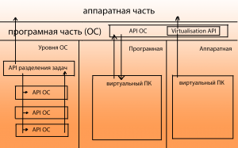
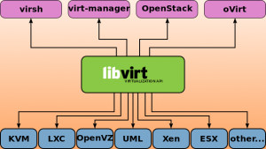

Что такое виртуализация KVM
Информация Обновлено: 26 апреля, 2020 8 Necromant
Сегодня сложно представить мир без компьютеризированных устройств. Лет этак 20 назад почти все бытовые приборы были электро-механические, об использовании компьютерных схем повсеместно не было даже и речи. Самые первые компьютеры занимали значительные объемы пространства, и могли относительно не много. Компьютерно-вычислительные комплексы за последнее время прошли достаточно большой путь развития. Хотя, принципиально компьютеры ничем не изменились, но вычислительные мощности стремительно возросли. Наличие компьютера в простой семье теперь не является чем-то особенным.
В данный момент, зачастую большое количество компьютерной техники в помещениях может доставлять значительно неудобств. По этой причине стали появляться централизованные системы. Но централизованные системы зачастую не могут решить тех проблем, которые решает сеть из компьютеров. По этой причине и была предложена концепция виртуализации, когда один центральный компьютер выполняет роль сети компьютеров.
Общие сведения о виртуализации
По своей сути, все ОС это в общем-то и так некоторая виртуальная среда, которая предоставляется разработчику ПО, как средство реализации конечных задач. Уже давно прошло то время, когда программы писались конкретно под аппаратную часть компьютера по средствам аппаратных кодов и запросов. Сегодня же, любое приложение – это в первую очередь приложение, написанное на некотором API, который находится под управлением ОС. Задачи же ОС – предоставить данным API непосредственно доступ к аппаратным ресурсам.
Собственно видов виртуализации существует несколько:
Виртуализация в свою очередь бывает полной и частичной.
Программная виртуализация – вид виртуализации, который задействует различные библиотеки ОС, транслируя вызовы виртуальной машины в вызовы ОС. (DOSBox, Virtualbox, VirtualPC)
Аппаратная виртуализация – такой вид, который предусматривает специализированную инструкцию аппаратной части, а конкретно инструкций процессора. Позволяет исполнять запросы в обход гостевой ОС, и исполнять прямо на аппаратном обеспечении. (виртуализация KVM,виртуализация XEN, Parallels, VMware, Virtualbox)
Виртуализация уровня операционной системы – виртуализация только части платформы, без полной виртуализации аппаратной части. Подразумевает работы нескольких экземпляров среды ОС. (Docker, LXC)
Данная статья будет рассматривать Аппаратную виртуализацию, а конкретно виртуализацию KVM.

Схема 1. – Взаимодействие компонентов виртуальной машины с аппаратной частью
Особенности виртуализации для ядра Linux
Для исполнения прямых аппаратных запросов в ОС должна иметься библиотека, которая направляла бы эти запросы аппаратной части напрямую. На платформах базы Linux долгое время никакой встроенной системы виртуализации (встроенного гипервизора), просто не существовало. Каждый производитель ПО для виртуализации, который поддерживало технологию аппаратной виртуализации, вынуждены были создавать собственные модули для ядра Linux (vboxdrv в Virtualbox, vmware-service в VMWare и пр.) Естественно, это не могло продолжаться вечно, и компания Qumranet, Inc, выкупленая затем Radhat создала ассоциацию Open Virtualization Alliance, которая была признана решить проблему отсутствия базового гипервизора для ядра Linux. Так и был создан гипервизор KVM или Kernel-based Virtual Machine.
Реализация
Гипервизор KVM представляет из себя загружаемый модуль ядра Linux, который предназначен для обеспечения виртуализации на платформе Linux x86. Сам модуль содержит компонент собственно виртуализации(kvm.ko), и процессорно-специфический загружаемый модуль kvm-amd.ko либо kvm-intel.ko.
Необходимым условием для использования KVM является поддержка инструкций виртуализации — Intel VT либо AMD , и ядро Linux версии 2.6.20 и выше. Существует также порт KVM под Free-BSD. Для вызова KVM традиционно используется QEMU, но также ведутся попытки добавить поддержку KVM в Virtualbox.
Сам по себе KVM не выполняет эмуляции. Вместо этого программа, работающая в пространстве пользователя, использует интерфейс /dev/kvm для настройки адресного пространства гостя виртуальной машины, через него же эмулирует устройства ввода-вывода и видеоадаптер.
KVM позволяет виртуальным машинам использовать немодифицированные образы дисков QEMU, VMware и других, содержащие операционные системы. Каждая виртуальная машина имеет своё собственное виртуальное аппаратное обеспечение: сетевые карты, диск, видеокарту и другие устройства.
Для использования данного гипервизора существует множество реализаций. Некоторые представляют из себя целые специализированные библиотеки, другие имеют вид простых графических приложений.
Для наглядности рассматривается виртуализация KVM на базе библиотеку virt-manager.
Данная библиотека позволяет упростить вызов различных гипервизоров, предоставляя удобный интерфейс для автоматизации процесса виртуализации. Кроме того, библиотека имеет возможность работы с сетевой инфраструктурой, что иногда важно, при построении клиент-серверных рабочих мест.

Схема 2. – Взаимодействие компонентов libvirt
QEMU позволяет создать фрейм для вызова гипервизора на клиентской системе. Данная программа настраивается аргументами вызова командной строки, является достаточно легкой и простой.
Существуют кроме того несколько графических оболочек, таких как Gnome-Boxes.
Виртуализация – неотъемлемая часть современных корпоративных систем, она позволяет сэкономить колоссальные денежные и энергетические ресурсы. Развитие технологий виртуализации является приоритетным направлением многих организаций. Развиваются такие технологии как как VGAPassthrough (технология "проброса" видеокарты хост-устройства в виртуальную машину) и PCIPassthrough ("проброс" PCI устройства).